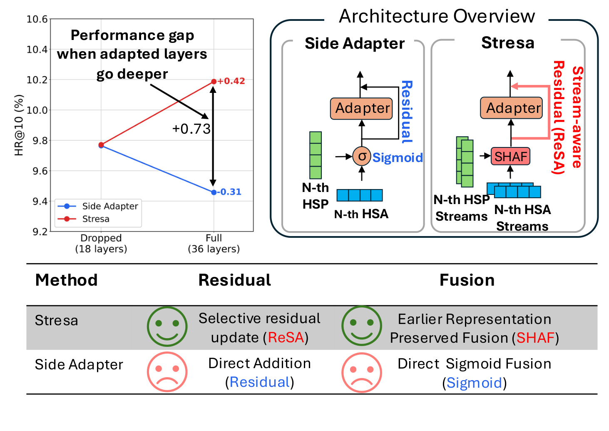
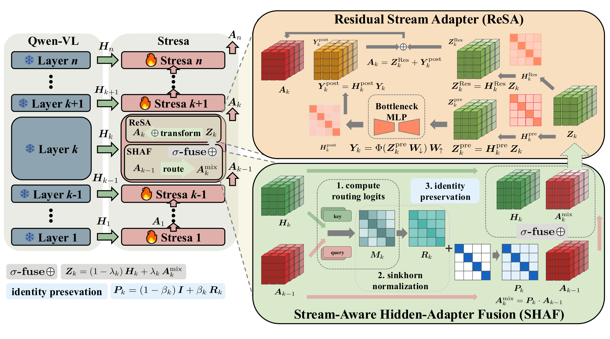
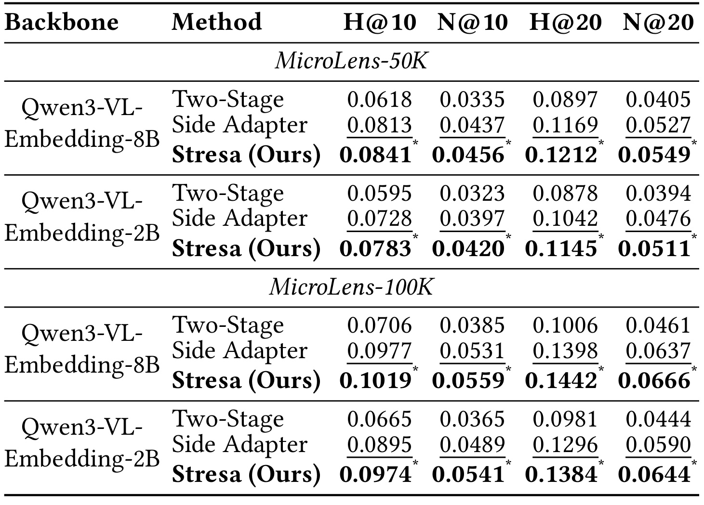
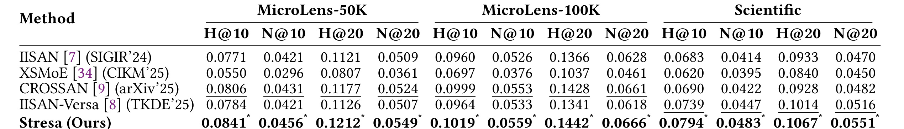
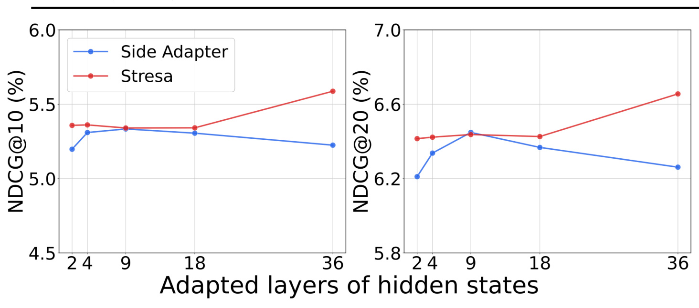
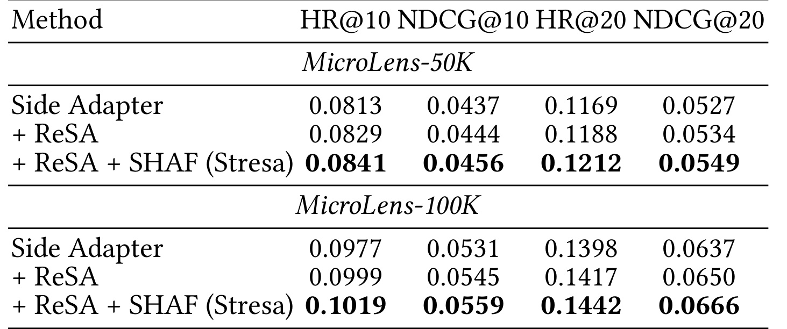
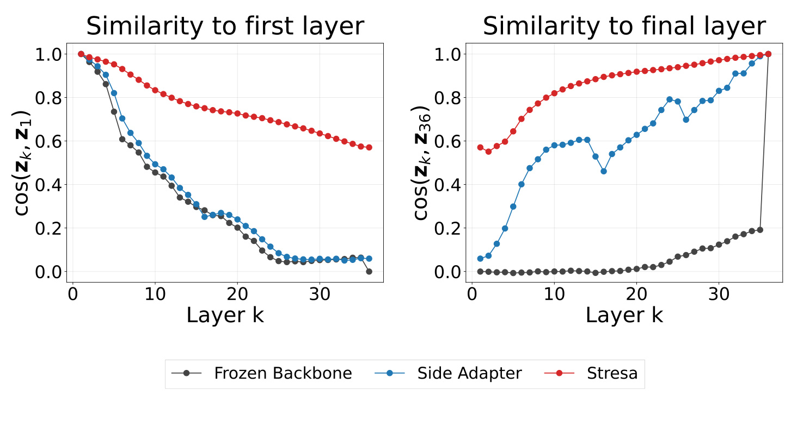

Stresa：让冻结多模态大模型的深层侧适配不再越深越差
这篇论文研究的是一个很具体、也很适合工业推荐的适配问题：已经有 Qwen3-VL-Embedding 这类大规模多模态表征模型，如何在不回传骨干、仍能离线缓存 item hidden states 的前提下，把它改造成更适合序列推荐的物品编码器。论文一作 Junchen Fu 来自 University of Glasgow，合作机构包括 Telefónica Scientific Research 与 Shandong University。作者提出 Stresa，把深层侧适配拆成“历史侧状态怎样到达当前层”和“融合状态怎样更新成下一层侧状态”两个问题，分别由 SHAF 与 ReSA 处理。唯一论文入口是 arXiv:2607.10909；事实包已核验官方代码仓库可访问。
冻结骨干的 Side Adapter 本应能利用更多隐藏层，但现有做法在适配层数加深时反而退化：直接残差相加没有判断融合表示中什么应保留、什么应抑制，逐层 sigmoid 融合又不能充分保存早期侧状态。结果是“更多层”没有变成更多有效信息，反而让历史表征在反复融合中被覆盖。
1. 背景和问题
多模态序列推荐通常同时依赖协同轨迹与内容语义。视频、图片、标题和描述提供了 item 之间的主题连续性、可替代性和跨模态意图线索；用户的交互序列则决定这些语义何时与下一物品预测相关。大型多模态 embedding 模型已经能把不同内容投到统一空间，表面上看可以直接拿最后一层向量喂给 SASRec 一类序列模型。但通用语义相似性与推荐相关性并不等价：预训练模型更关心“内容是否相像”，序列推荐还关心用户行为转移、场景偏好和下一步选择。因此，冻结 embedding 直接使用会留下明显的 domain misalignment。
全量微调能改写骨干，却会付出显存、反向图和大目录重复编码的成本。Side adaptation 的吸引力在于把大骨干冻结，只训练轻量侧支路；选定层的 hidden states 可以预先抽取并缓存，训练和上线只处理较小的适配器与下游序列模型。这个设置不是一般意义上的“参数少一点”，而是一种 item-side 部署契约：物品向量与具体用户无关，可离线刷新并服务于大量请求。Stresa 也严格留在这条边界内，论文不把 user encoder 或在线个性化计算混入适配器，从而让方法改进仍能复用既有缓存链路。
普通 Side Adapter 在每个被选中的骨干层，把当前 hidden state 与上一层侧输出做 sigmoid 融合，再经瓶颈 MLP 与固定残差路径得到新状态。浅层时，上一层侧输出还接近局部中间特征；层数增多后，它实际上成为跨越多层的“历史记忆”。此时直接相加默认所有维度都同等值得传播，逐层 sigmoid 又只决定两路信号的整体比例，没有描述历史记忆内部的子空间该怎样重排。论文把问题定位到两个缺口：残差更新缺少选择性，历史侧状态缺少身份保持。既有方法因此常用 LayerDrop，只接入部分层，实际上放弃了大骨干中相当一部分潜在表征。
这里还要区分“已经拥有末层 embedding”和“真正利用了全部中间层”。末层向量是骨干为通用跨模态检索压缩出的最终语义，它不保证把每一层对推荐有用的局部线索都保留下来；反过来，把 36 层 hidden states 全部接到侧支路，也不等于这些线索会自动累积。若历史侧状态在每层都被无条件相加并重新 sigmoid 混合，早层信息可能被后层主导，噪声也可能反复进入。LayerDrop 能缩短这条传播链，因而缓解退化，却同时把“哪些层有用”固化成事先选择。Stresa 的研究问题更严格：不是寻找一个更好的丢层比例，而是让同一条侧支路在深度增加时仍能保留身份、选择更新，从而把全层隐藏状态从潜在输入变成可稳定训练的信号。

Figure 1 左侧把这个矛盾画得非常直接。在 Qwen3-VL-8B-Embedding 上，从 Dropped 18 layers 扩到 Full 36 layers，普通 Side Adapter 的 HR@10 下降 0.31 个百分点，而 Stresa 上升 0.42 个百分点，两者在全层设置下形成 0.73 个百分点的差距。这里最重要的不是单个终点，而是斜率方向相反：如果提升只来自更多参数或更强 MLP，两条线应至少同向；现在普通方法越深越差，说明故障发生在跨层状态传播本身。右侧进一步把因果假设落到结构上：普通方法使用 direct addition 和 direct sigmoid fusion，Stresa 则分别用 ReSA 的 selective residual update 与 SHAF 的 earlier-representation-preserved fusion。图中的 HSP 是当前预训练骨干层的隐藏状态，HSA 是上一适配层传播来的侧状态；Stresa 把二者 reshape 成 streams，不再把整条向量当成不可分的单块。需要注意，首页图只是动机性结果，严格证据还要看后文不同层数曲线、模块消融和逐层相似度是否共同支持这条解释。
2. 方法
2.1 从冻结隐藏状态到逐层侧状态
论文先把任务写成标准 next-item prediction。对用户 $u$，按时间排序的交互序列是 $S_u=(v_1^u,v_2^u,\ldots,v_{T_u}^u)$；每个物品 $v$ 有 $M$ 种模态内容 $\mathbf{x}_v=\{\mathbf{x}_v^{(m)}\}_{m=1}^{M}$。冻结的多模态骨干 $\mathcal{B}$ 有 $L$ 层，产生 $\mathbf{h}_v^{(1)},\ldots,\mathbf{h}_v^{(L)}\in\mathbb{R}^d$。系统只选择有序层集合 $\mathcal{L}=\{\ell_1<\cdots<\ell_K\}$ 做适配，这些 hidden states 因骨干冻结而可离线缓存。Stresa 的训练对象不是 Qwen3-VL 权重，而是跨层侧状态的运输和更新规则。 侧状态从 $\mathbf{a}_v^{(0)}=0$ 开始，在第 $k$ 个适配点递归更新，并与冻结末层 embedding 做残差合成：
$$ \mathbf{a}_v^{(k)}=\operatorname{Stresa}_k\!\left(\mathbf{h}_v^{(\ell_k)},\mathbf{a}_v^{(k-1)}\right),\qquad \widetilde{\mathbf{e}}_v=\mathbf{e}_v^{0}+\mathbf{W}_o\mathbf{a}_v^{(K)}. $$下游序列模型 $\mathcal{F}_\psi$ 把历史适配向量映射为用户状态 $\mathbf{q}_{u,t}$，候选分数是 $s(u,t,v)=\mathbf{q}_{u,t}^{\top}\widetilde{\mathbf{e}}_v$，训练仍用候选集合 $\mathcal{C}_{u,t}$ 上的 softmax next-item loss。符号解释：$K$ 是实际接入的骨干层数，$\mathbf{e}_v^0$ 是冻结骨干的最终 item embedding，$\mathbf{W}_o$ 把最终侧状态投回 item 空间；可训练部分包括 Stresa、输出投影和下游序列模型。这个定义明确了性能提升不能来自修改骨干本身，也不能来自改变评价打分函数。每个 Stresa block 内再做一次职责分离：
$$ \mathbf{Z}_k=\operatorname{SHAF}(\mathbf{H}_k,\mathbf{A}_{k-1}),\qquad \mathbf{A}_k=\operatorname{ReSA}(\mathbf{Z}_k). $$其中 $\mathbf{H}_k,\mathbf{A}_{k-1}\in\mathbb{R}^{s\times d_s}$ 是把当前骨干向量和历史侧向量 reshape 成 $s$ 条 stream 后的矩阵，满足 $d=s d_s$。SHAF 负责 memory transport：历史状态以什么结构到达当前深度、怎样与当前语义锚点融合；ReSA 负责 state refinement：融合结果怎样经非线性和残差支路变成下一层继续传播的状态。把两者分开，是论文比“再堆一个 adapter”更关键的建模选择。

Figure 2 左侧沿骨干深度展示冻结 Qwen-VL hidden states 如何逐层送入 Stresa，而侧状态 $A_{k-1}\rightarrow A_k\rightarrow A_{k+1}$ 形成另一条连续记忆路径。右下绿色区域是 SHAF：当前 $H_k$ 提供 query，历史 $A_{k-1}$ 提供 key，经 routing logits、Sinkhorn 与 identity preservation 得到 $A_k^{\mathrm{mix}}$，再和 $H_k$ 做受门控融合。右上橙色区域是 ReSA：融合状态同时进入 pre-mixing 后的瓶颈非线性支路与 learned residual 支路，两路相加形成 $A_k$。这张图需要从下到上读，而不是把 SHAF 和 ReSA 当作并列插件：SHAF 的输出 $Z_k$ 是 ReSA 的输入，ReSA 的输出又成为下一层 SHAF 的历史记忆。若只保留前者，融合后仍由普通固定残差更新；若只保留后者，历史状态在进入 ReSA 前仍可能被简单 sigmoid 融合覆盖，二者解决的是连续链条上的不同失真点。
2.2 SHAF：带身份保持的历史流路由
SHAF 首先为当前层和历史状态的每条 stream 生成 query/key 描述，并计算小尺度路由矩阵：
$$ M_k(i,j)=\frac{\mathbf{q}_{k,i}^{\top}\mathbf{k}_{k,j}}{\sqrt{d_r}},\qquad \mathbf{R}_k=\operatorname{Sinkhorn}\!\left(\frac{\mathbf{M}_k}{\tau}\right). $$这里 $d_r$ 是路由投影维度，$\tau$ 是温度，$\mathbf{R}_k\in\mathbb{R}^{s\times s}$ 经过有限轮 Sinkhorn 行列归一化，近似成为双随机软路由。符号解释：$R_k(i,j)$ 表示当前层第 $i$ 个 stream 从历史第 $j$ 个 stream 接收多少信息。与直接学习一个 $d\times d$ 全维变换相比，这个算子只在 $s$ 条 stream 间工作；它不是声称每条 stream 天然对应某个可解释模态，而是人为提供一个轻量结构坐标，让相关子空间能够交互。
如果直接用 $\mathbf{R}_k\mathbf{A}_{k-1}$ 替代历史状态，路由仍可能在多层后彻底改写早期记忆。SHAF 因而把单位矩阵混入路由：
$$ \beta_k=\sigma(\widehat{\beta}_k),\qquad \mathbf{P}_k=(1-\beta_k)\mathbf{I}+\beta_k\mathbf{R}_k, $$ $$ \mathbf{A}_k^{\mathrm{mix}}=\mathbf{P}_k\mathbf{A}_{k-1},\qquad \lambda_k=\sigma(\widehat{\lambda}_k),\qquad \mathbf{Z}_k=(1-\lambda_k)\mathbf{H}_k+\lambda_k\mathbf{A}_k^{\mathrm{mix}}. $$符号解释：$\beta_k$ 控制历史 stream 布局允许被重排多少，$\lambda_k$ 控制完成运输的历史记忆在当前融合中占多少，两个门功能不同。$\beta_k\rightarrow0$ 时，$\mathbf{P}_k\rightarrow\mathbf{I}$，历史状态沿原 stream 身份直接通过；$\beta_k$ 增大时才允许 $\mathbf{R}_k$ 做跨流交换。随后 $\lambda_k$ 再在当前骨干语义 $\mathbf{H}_k$ 与已运输历史 $\mathbf{A}_k^{\mathrm{mix}}$ 之间取舍。也就是说，SHAF 先回答“历史记忆内部怎么搬”，再回答“搬来的历史用多少”，避免一个 sigmoid 同时承担两种决策。
这种身份保持不是简单“不许变化”。单位路径保证早期信息有显式直达项，路由项提供按层重组能力；二者由 $\beta_k$ 连续插值。深层适配的难点正是既要逐层吸收新的骨干语义，又不能让累计重写变成不可逆覆盖。SHAF 把这组张力放进可检查的矩阵结构中：如果训练认为历史流布局已经合适，就靠近单位映射；如果当前层需要跨子空间交换，就增加路由成分。它仍是数据驱动软门控，不保证每个 stream 获得稳定的语义标签，这也是解释结果时应保留的边界。
2.3 ReSA：流空间中的选择性残差更新
SHAF 得到的 $\mathbf{Z}_k$ 已位于 stream 空间，ReSA 不把它压回一条无结构向量，而是在瓶颈前、瓶颈后和残差支路分别引入小型 stream mixing。非线性支路写作：
$$ \mathbf{Z}_k^{\mathrm{pre}}=\mathbf{H}_k^{\mathrm{pre}}\mathbf{Z}_k,qquad \mathbf{Y}_k=\phi\!\left(\mathbf{Z}_k^{\mathrm{pre}}\mathbf{W}_{\downarrow}\right)\mathbf{W}_{\uparrow},qquad \mathbf{Y}_k^{\mathrm{post}}=\mathbf{H}_k^{\mathrm{post}}\mathbf{Y}_k. $$符号解释：$\mathbf{H}_k^{\mathrm{pre}}$ 与 $\mathbf{H}_k^{\mathrm{post}}$ 是 ReSA 内部的 stream mixing 矩阵，不是冻结骨干 hidden state；$\mathbf{W}_{\downarrow},\mathbf{W}_{\uparrow}$ 构成共享瓶颈 MLP，$\phi$ 是非线性。pre-mixing 让每条 stream 在进入瓶颈前看见其他相关流，post-mixing 再把非线性结果重新分配。这样，瓶颈的低秩压缩发生在有结构的局部宽度 $d_s$ 上，而非一次性处理完整 $d$ 维向量。
残差支路也不再固定为 identity，而是学习一条 stream-wise shortcut：
$$ \mathbf{Z}_k^{\mathrm{res}}=\mathbf{H}_k^{\mathrm{res}}\mathbf{Z}_k,qquad \mathbf{A}_k=\mathbf{Z}_k^{\mathrm{res}}+\mathbf{Y}_k^{\mathrm{post}}. $$符号解释：$\mathbf{H}_k^{\mathrm{res}}$ 决定哪些融合 stream 可沿简单路径保留或重新组合，$\mathbf{Y}_k^{\mathrm{post}}$ 提供需要强非线性改写的部分，二者相加得到下一层历史侧状态。论文称其 selective residual update，并不是在元素级显式输出一个 0/1 mask，而是把固定同一映射推广为可学习 stream residual mapping；“选择性”来自不同流经过不同组合与两条支路的结构化叠加。
ReSA 与 SHAF 的互补关系可以用信息路径来读。SHAF 保证上一层 $A_{k-1}$ 进入当前深度时既有身份路径又能跨流路由；ReSA 再把融合状态拆成“可由简洁捷径传播的部分”和“需要瓶颈变换的部分”。前者主要对抗历史记忆在融合前被覆盖，后者对抗融合后所有信息被同一固定残差无差别传递。两者都使用 stream 结构，但不共享职责：把它们压成一个复杂 adapter 会失去清晰的传输—更新边界，也不利于后文用消融定位收益。
2.4 结构关系、复杂度与部署边界
论文给出一个很有用的代数解释。设普通 sigmoid 融合为 $\mathbf{Z}_k^{\mathrm{plain}}=(1-\lambda_k)\mathbf{H}_k+\lambda_k\mathbf{A}_{k-1}$，则 SHAF 可以精确写成：
$$ \mathbf{Z}_k=\mathbf{Z}_k^{\mathrm{plain}}+\mathbf{C}_k,qquad \mathbf{C}_k=\lambda_k\beta_k(\mathbf{R}_k-\mathbf{I})\mathbf{A}_{k-1}. $$符号解释：$\mathbf{C}_k$ 是相对普通融合新增的 stream-aware correction。$\beta_k=0$ 或 $\mathbf{R}_k=\mathbf{I}$ 时修正消失，SHAF 退化为普通融合；因此新方法不是另起一套完全不同的表示，而是在保留基线特例的基础上控制跨流重组。若 $\mathbf{R}_k$ 为双随机，投影到共同 stream 模式的修正为零，额外变化只作用于流之间的差异部分。有限轮 Sinkhorn 下这一性质是近似的，论文没有把它宣称为优化收敛保证。
ReSA 也包含普通残差瓶颈作为特例。当 $\mathbf{H}_k^{\mathrm{pre}}=\mathbf{H}_k^{\mathrm{post}}=\mathbf{H}_k^{\mathrm{res}}=\mathbf{I}$ 时，$\mathbf{A}_k=\mathbf{Z}_k+\phi(\mathbf{Z}_k\mathbf{W}_{\downarrow})\mathbf{W}_{\uparrow}$。这说明它的表达力来自把固定 shortcut 和无结构瓶颈推广为三处流混合，而不是取消残差稳定路径。真正的技术中心是：保持基线的可退化特例，同时只在历史流差异上增加受控自由度。 这也解释了为什么身份保持门和 learned residual map 需要一起看，前者约束运输，后者丰富更新。
计算上，SHAF 增加 $s\times s$ 路由、Sinkhorn 与历史矩阵乘；ReSA 增加三组 stream mixing，瓶颈只在宽度 $d_s$、秩 $r$ 上工作。作者采用 $s\ll d$、$r\ll d_s$ 的设置，因此额外算子小于全维 $d\times d$ 变换，但并非零成本。更重要的是，冻结骨干和缓存 hidden states 的工作流不变：训练不保存骨干反向图，训练后适配 item embedding 仍可离线生成并像普通 item 向量一样服务。方法没有解决在线 continual adaptation，也没有讨论用户相关 item encoding；它优化的是“冻结、可缓存、深层 item-side adaptation”这一明确场景。
3. 实验结果
实验包含 MicroLens-50K、MicroLens-100K 与 Amazon Scientific。三者分别有 50,000/100,000/12,076 个用户，19,099/19,738/20,314 个物品，以及 339,511/719,405/81,711 条交互。骨干使用 Qwen3-VL-Embedding 2B 和 8B，保持冻结并读取缓存 hidden states；下游序列推荐器为两个 Transformer block、两个 attention head，用户序列截断为 10。优化器是 AdamW，weight decay 0.1，适配器学习率从 $10^{-5},10^{-4},10^{-3}$ 中选择并最终设为 $10^{-4}$，batch size 512，瓶颈 rank 在 128/256/512/1024 中搜索。最后一次交互做测试、倒数第二次做验证，指标为全物品排序的 HR@10、NDCG@10、HR@20、NDCG@20；显著性比较基于五个随机种子。
第一组最干净的对照固定同一单塔骨干与同一下游模型，只比较 Two-Stage、普通 Side Adapter 和 Stresa。Two-Stage 只用冻结末层 embedding，回答“适配是否必要”；Side Adapter 与 Stresa 都用侧支路，回答“改进是否来自新的深层运输/更新结构”。这种设计比直接拿不同多塔方法横比更能隔离方法变量，但仍需注意 Table 2 报告的是每个 setting 下最佳 test 表现，超参数搜索空间和模型选择过程会影响最终差值。

Table 2 显示四个骨干—数据组合上，Stresa 的四项指标都高于 Side Adapter 与 Two-Stage。以 Qwen3-VL-8B 为例，MicroLens-50K 的 HR@10 从 Side Adapter 的 0.0813 升到 0.0841，NDCG@20 从 0.0527 升到 0.0549；MicroLens-100K 的 HR@10 从 0.0977 升到 0.1019，NDCG@20 从 0.0637 升到 0.0666。2B 骨干上方向一致，而且 MicroLens-100K 的 HR@10 从 0.0895 升到 0.0974，幅度更明显。相对 Two-Stage 的差距则更大，说明推荐域适配本身有价值；相对 Side Adapter 的增益较小但跨指标一致，说明论文真正需要证明的是稳定深层适配，而不是仅证明“加 adapter 有用”。表中星号表示 Stresa 相对次优方法在五次种子上通过 0.05 水平 t-test，但正文没有报告置信区间或效应量，不能把统计显著自动等同于巨大业务收益。
第二组对照把范围扩展到 IISAN、XSMoE、CROSSAN 与 IISAN-Versa。公平性边界需要先讲清：这些方法多采用不同的多塔侧适配结构，Stresa 是单塔 Qwen3-VL-Embedding；作者保留各 baseline 的原架构并报告其最佳结果，另为 IISAN-Versa 提供 8B 文本侧变体。论文还明确聚焦纯多模态 side-information、无额外 ID 信号或辅助监督的设置。因此 Table 3 适合回答“在同类侧适配范式里是否有竞争力”，不适合宣称胜过所有可能使用 ID、额外监督或不同计算预算的多模态推荐器。

Table 3 中 Stresa 在三套数据、十二个指标上都是最高值。MicroLens-50K 上，最强 prior baseline CROSSAN 的 HR@10/NDCG@10 是 0.0806/0.0431，Stresa 达到 0.0841/0.0456；MicroLens-100K 对应从 0.0999/0.0553 到 0.1019/0.0559，提升较小但方向一致。Scientific 上最强对手转为 IISAN-Versa，Stresa 将 HR@10 从 0.0739 提到 0.0794，NDCG@20 从 0.0516 提到 0.0551，跨域收益相对更醒目。表格的优势是把“稳定一致”显示得很清楚，局限是没有统一参数、FLOPs 与缓存成本后再比较所有 baseline；因此更稳妥的结论是 Stresa 在作者定义的 side-adaptation 比较协议中达到最好，而不是断言它在任意工业约束下都占优。
只看终点指标仍不能验证论文标题中的“stream-aware deep adaptation”。作者于是固定 MicroLens-100K 与 Qwen3-VL-8B，把接入 hidden-state layers 的数量改为 2、4、9、18、36。这个实验直接检验更深是否继续有用：若结构只增加静态容量，曲线不一定随深度表现出系统差异；若历史侧状态运输确实是瓶颈，普通方法应在累计融合加深后出现下降，而 Stresa 应保持或改善。

Figure 3 与首页动机图形成更完整的证据链。普通 Side Adapter 在 9 个适配层附近达到最好，之后 NDCG@10 和 NDCG@20 都随 18、36 层下降；Stresa 在 2、4、9、18 层附近较稳定，到 36 层明显上升，NDCG@10 约 5.6%、NDCG@20 约 6.65%。这里不能把每个中间点的小差异过度解读，因为图中没有误差条，而且指标取自 validation HR@10 最佳的 epoch；但两条曲线从 9 层后的方向分叉与中心假设吻合。更重要的是，36 层的收益不是简单线性累积：Stresa 在中间深度大致持平，最后才拉开差距，说明方法更像避免长期记忆损坏，让最后阶段仍可利用深层 hidden states，而不是每多接一层都稳定获得固定增益。
模块消融在 Qwen3-VL-8B 上从同一个 Side Adapter 起步，先加入 ReSA，再加入 SHAF 得到完整 Stresa。这种逐级构造能检查两模块是否互补，不过加入顺序固定为 ReSA→SHAF，没有报告“只加 SHAF、不加 ReSA”的完全对称组合，因此严格说可以确认 ReSA 在基线上有效、SHAF 在已有 ReSA 时继续有效，不能完全分离二者所有交互效应。

Table 4 的数字呈稳定递进。MicroLens-50K 上，Side Adapter 的 HR@10/NDCG@10 是 0.0813/0.0437，加入 ReSA 后为 0.0829/0.0444，再加入 SHAF 后为 0.0841/0.0456；MicroLens-100K 对应从 0.0977/0.0531 到 0.0999/0.0545，再到 0.1019/0.0559，HR@20 与 NDCG@20 同向。Table 5 进一步显示去掉 Identity Preservation 会让 50K 的 HR@10 从 0.0841 降至 0.0807、100K 从 0.1019 降至 0.0991，四项指标均下降，支持单位路径不是装饰。Table 6 比较 ReSA 是否加 manifold-constrained residual，结果在不同指标上互有小胜：例如 100K NDCG@20 从 0.0650 到 0.0655，但 HR@10 从 0.0999 到 0.0996；考虑流形操作额外成本，作者不把它作为默认。综合来看，完整收益来自受控历史运输与流空间残差更新的组合，而非单一复杂算子。
为了从表征机制侧验证“早期信息被保留、后期语义渐进吸收”，作者计算每个适配深度表示 $\mathbf{z}_k$ 与首层 $\mathbf{z}_1$、末层 $\mathbf{z}_{36}$ 的余弦相似度，并在物品上取平均。冻结骨干、普通 Side Adapter 与 Stresa 三条轨迹使用相同的 36 个深度点。这是描述性分析，不是因果证明：高首层相似度并不天然等于推荐更好，理想轨迹还必须与最终指标共同看。

Figure 4 左图显示 Stresa 与首层的相似度从 1.0 缓慢降到约 0.57，而冻结骨干和普通 Side Adapter 在前十几层快速跌到 0.4 以下，后期接近 0；右图中 Stresa 从一开始就保有约 0.55 的末层相似度，随后平滑升到 1.0，普通 Side Adapter 则呈现更剧烈的局部起伏，冻结骨干直到最后一层前仍很低。作者据此认为 Stresa 同时维持 early identity 与 progressive refinement。值得留意的是，Stresa 两条曲线的“更平滑”部分可能也来自表示被更强地约束在某种公共子空间，并不自动证明所有被保留信息都与下一物品有关；但它与 Figure 3 的深度稳定性、Table 5 的身份保持消融方向一致，使“历史状态没有被突然覆盖”这一解释比只看主表更可信。
效率要拆成三件事：骨干是否冻结、可训练参数多少、训练时每步计算多少。Stresa 延续冻结与缓存优势，所以不需要骨干反传；它的 stream bottleneck 还减少了可训练参数。但 SHAF 路由、Sinkhorn 和三组 ReSA mixing 都会增加前向/反向运算，因此“parameter-efficient”不等价于更低 FLOPs 或更快 epoch。
Table 7 给出这项交换的实际量级。Stresa 有 78.06M 可训练参数，普通 Side Adapter 为 155.73M，约减少 49.9%；但每 epoch 时间从 338.20 秒增到 392.41 秒，约增加 16.0%，每 step FLOPs 从 $4.395\times10^{12}$ 增到 $5.311\times10^{12}$，约增加 20.8%。因此 Stresa 的优势是“少参数、保持冻结缓存、换取适中的额外流路由计算并获得更强深层稳定性”，不是全面节省资源。论文没有给出 item hidden-state 缓存容量、离线全目录刷新耗时、峰值显存、推理延迟或吞吐，这些会决定真实系统中 36 层缓存与 18 层 LayerDrop 相比是否划算。若目录极大，存更多层 hidden states 的 I/O 与存储成本可能成为新的瓶颈，需要在复现和上线评估中单独测量。
4. 总结
Stresa 最值得记住的不是又提出了两个缩写，而是重新界定了深层 Side Adapter 的状态性质：上一层侧输出一旦跨越很多骨干层，就不再是临时局部特征，而是需要显式保护和运输的历史记忆。SHAF 用 query-key 路由与 Sinkhorn 在 stream 间组织交互，再把单位映射混入路由，分开控制“历史内部怎样重排”和“历史整体用多少”；ReSA 在 pre、post 与 residual 三条位置做 stream mixing，把固定残差推广成可学习的选择性捷径。两者一起保留冻结大模型、离线缓存 item states 的部署契约。
实验支持一个相对克制但完整的结论：在作者的冻结 Qwen3-VL-Embedding、纯多模态 side-information、长度 10 序列与全排序协议下，Stresa 跨两个骨干规模和三套数据集稳定胜过普通 Side Adapter 及同类强基线；更关键的是，普通方法在约 9 层后退化，Stresa 到 36 层仍能改善。ReSA→SHAF 的递进消融、Identity Preservation 消融与逐层余弦轨迹都与“运输更稳”一致。参数量约减半，但训练时间和 FLOPs 分别增加约 16% 与 21%，所以它是在缓存友好前提下用小型结构计算换取深层适配能力。
当前证据仍有明确边界。论文是 arXiv v1，数据集中两个来自同一 MicroLens 系列，Scientific 规模较小；骨干只覆盖 Qwen3-VL-Embedding 2B/8B，序列截断 10，没有在线 A/B、continual adaptation、长序列、缓存存储或端到端延迟结果。SOTA 横比也存在单塔与多塔架构差异，消融缺少 SHAF-only 的对称组合。后续最有价值的验证不是继续堆模块，而是在更长序列、更多多模态骨干和真实离线 embedding 刷新链路中同时测推荐收益、缓存体积、峰值显存、训练吞吐与服务成本，并观察路由门 $\beta_k$、融合门 $\lambda_k$ 是否随深度形成稳定、可复现的模式。
从研究视角看，这篇工作的启发可以浓缩为一句话：当参数高效适配跨越很多冻结层时，状态传播本身就是建模对象。 只有先区分哪些信息需要保持身份、哪些信息需要跨子空间重组、哪些信息需要非线性改写，才可能真正把“更多隐藏层”转化为有效推荐信号。Stresa 已在受控离线场景给出较扎实的第一步，但是否能成为通用的大模型推荐适配器，还取决于上述跨骨干、长序列和真实系统成本验证。